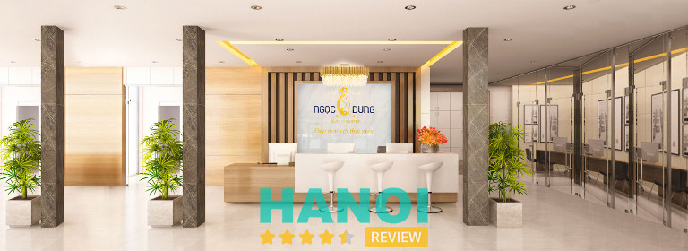
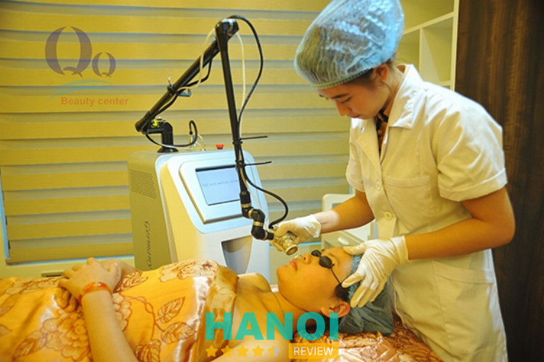
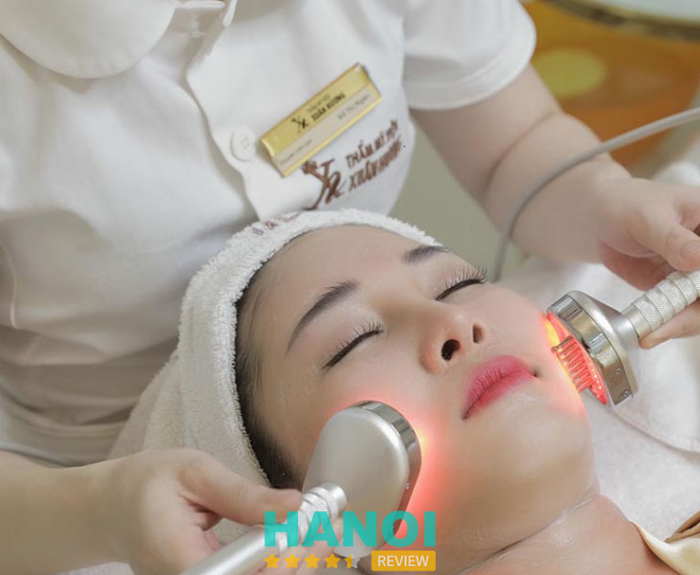
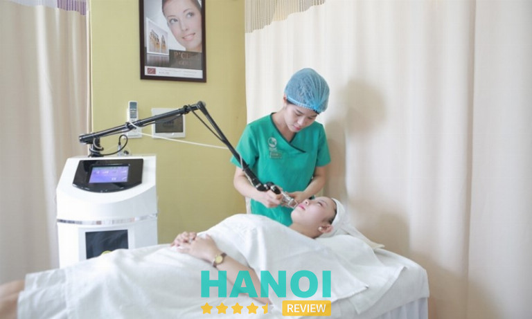
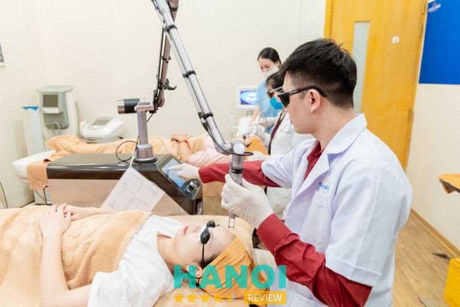
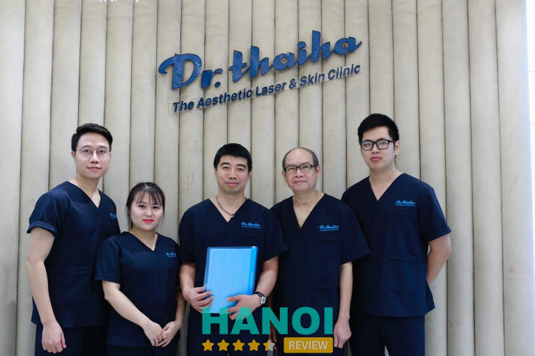

10 Địa chỉ tẩy nốt ruồi tại Hà Nội uy tín, sạch vĩnh viễn
Việc xuất hiện các nốt ruồi trên da ngày càng nhiều, nó làm mất đi sự tự tin của nhiều chị em phụ nữ. Chính vì thế, nhiều người đang băn khoăn, tìm kiếm một địa chỉ tẩy nốt ruồi an toàn và uy tín tại Hà Nội. Để giải đáp những thắc mắc đó thì bài viết dưới đây sẽ giúp bạn đọc có th ể tìm được một địa chỉ phù hợp với mình nhé!
Top 10 Địa chỉ tẩy nốt ruồi tại Hà Nội uy tín
Ngày nay có rất nhiều cơ sở thẩm mỹ được mở ra để phục vụ nhu cầu cải thiện nhan sắc của bản thân. Song, chính vì lẽ đó làm cho khách hàng khó lòng có thể đưa ra một lựa chọn một địa chỉ uy tín để gửi gắm nhan sắc của mình.
Dưới đây là 10 địa chỉ tẩy nốt ruồi tại Hà Nội uy tín, vô cùng nổi tiếng, HaNoiReview tổng hợp được bạn hãy tham khảo nhé.
Bệnh viện Da liễu Hà Nội
Bệnh viện Da liễu Hà Nội là một trong những địa chỉ tẩy nốt ruồi uy tín tại Hà Nội. Với 17 năm thành công và phục vụ, đơn vị này không chỉ là nơi thăm khám và điều trị, mà còn là điểm đến thẩm mỹ uy tín và an toàn.
Đội ngũ y bác sĩ tại bệnh viện sở hữu kinh nghiệm lâu năm và chuyên môn cao, cam kết mang lại sự yên tâm và chăm sóc tốt nhất cho mỗi khách hàng. Họ không chỉ là những chuyên gia trong lĩnh vực tẩy, xoá nốt ruồi mà còn có khả năng điều trị đa dạng các vấn đề da liễu.
Bệnh viện không chỉ đầu tư vào kiến thức và kỹ năng của đội ngũ y bác sĩ, mà còn trang bị hệ thống máy móc và trang thiết bị hiện đại nhất. Điều này đảm bảo rằng mọi liệu pháp và quy trình đều được thực hiện với chất lượng cao nhất, đồng thời mang đến những trải nghiệm tuyệt vời cho khách hàng. Ngoài các dịch vụ chăm sóc da cơ bản, bệnh viện còn nổi bật với các dịch vụ hỗ trợ thẩm mỹ da đa dạng. Từ cải thiện sẹo lồi, sẹo lõm, đến giải quyết vấn đề da lão hóa, chùng nhão và nốt ruồi, mọi nhu cầu về thẩm mỹ đều được đáp ứng chuyên nghiệp và hiệu quả.
Tại Bệnh viện Da liễu Hà Nội, việc xóa nốt ruồi không chỉ là quá trình loại bỏ những đốm nhỏ trên da, mà còn là hành trình chăm sóc và làm mới vẻ đẹp của bạn một cách an toàn và hiệu quả. Tại đây luôn sử dụng những phương pháp tiên tiến nhất trong việc xóa nốt ruồi, trong đó có Laser CO2, đốt điện, và phẫu thuật. Sự lựa chọn linh hoạt này giúp bạn dễ dàng chọn phương pháp phù hợp với nhu cầu và mong muốn của bản thân.
Với sự tư vấn chuyên nghiệp từ đội ngũ bác sĩ, bạn sẽ được hướng dẫn cách chăm sóc vết thương một cách hiệu quả, đảm bảo việc lành nhanh và hạn chế tối đa nguy cơ để lại sẹo lõm và sẹo lồi. Quá trình trị nốt ruồi được thực hiện nhanh chóng và hiệu quả, mà không tạo cơ hội cho nó quay trở lại.
Khi tẩy nốt ruồi tại đây bện viện cam kết không cần phải mất thời gian nghỉ dưỡng, không có cảm giác đau đớn, và đặc biệt loại bỏ hết các hắc tố không mong muốn trên da. Bệnh viện Da liễu Hà Nội không chỉ là nơi chữa trị, mà còn là điểm đến để khám phá và nâng cao vẻ đẹp tự tin của bạn. Hãy trải nghiệm sự khác biệt và chăm sóc đẳng cấp tại đây, nơi sức khỏe và vẻ đẹp của bạn được đặt lên hàng đầu.
Giờ làm việc: Thứ 2 – Thứ 6 (6:30 – 11:30 và 13:30 – 17:30), Thứ 7 – Chủ nhật – Ngày lễ (7:30 – 11:30 và 13:30 – 17:30)
Thông tin liên hệ:
- Địa chỉ: 79B Nguyễn Khuyến, P. Văn Miếu, Q. Đống Đa, Hà Nội
- Điện thoại: 1900 8186
- Email: bvdl@hanoi.gov.vn
- Website: benhviendalieuhanoi.com
Thẩm mỹ viện Hồng Ngọc
Nếu bạn đang tìm kiếm một địa chỉ an toàn và uy tín để xóa, tẩy nốt ruồi tại Hà Nội thì Thẩm mỹ viện Hồng Ngọc là sự lựa chọn hoàn hảo. Được sự cấp phép từ Sở Y tế Hà Nội, Hồng Ngọc luôn tự hào là địa điểm đáng tin cậy để khắc phục mọi khuyết điểm trên khuôn mặt của bạn.
Đến với thẩm mỹ viện Hồng Ngọc bạn được làm đẹp với những thiết bị hiện đại tiên tiến bậc nhất. Cam kết mang đến trải nghiệm làm đẹp tốt nhất và đáp ứng mọi nhu cầu của khách hàng.
Khi bạn chọn phương pháp xóa nốt ruồi tại Thẩm mỹ viện Hồng Ngọc, bạn sẽ được trải nghiệm công nghệ Laser Co2 tiên tiến. Phương pháp này mang đến nhiều ưu điểm đặc biệt như điều trị tận gốc, ngăn chặn nguy cơ tái phát hiệu quả, nhanh chóng mà hoàn toàn không để lại sẹo.
Quy trình xóa nốt ruồi tại Thẩm mỹ viện Hồng Ngọc được thực hiện nhanh chóng và an toàn. Từ thăm khám đánh giá tình trạng nốt ruồi, sát khuẩn da, gây tê, cho đến việc tiến hành tẩy nốt ruồi bằng tia laser Co2 – mọi bước đều tuân thủ các quy định của Bộ Y tế. Quy trình kết thúc với chườm lạnh và bôi kem tái tạo, giúp da bạn nhanh chóng hồi phục và mang lại kết quả đẹp tự nhiên.
Thẩm mỹ viện Hồng Ngọc – nơi hiện đại hóa vẻ đẹp của bạn, với sự chăm sóc chuyên nghiệp và hiệu quả. Hãy để chúng tôi chia sẻ hành trình làm đẹp đặc biệt của bạn, nơi mọi chi tiết được chăm sóc đến từng milimet.
Thông tin liên hệ:
- Địa chỉ: Tầng 4 Bệnh viện Hồng Ngọc số 2 Châu Văn Liêm, Nam Từ Liêm, Hà Nội
- Điện thoại: 0915 810 138
- Email: Thammy@hongngochospital.vn
- Website: thammyhongngoc.com
- Fanpage: FB.com/thammyvienhongngoc/
GỢI Ý: 10 Địa chỉ trị sẹo (lồi, lõm, rỗ,…) tại Hà Nội uy tín nhất
Thẩm mỹ viện Ngọc Dung
Chọn lựa Thẩm mỹ viện Ngọc Dung là sự quyết định đúng đắn cho việc tẩy nốt ruồi tại Hà Nội, nơi mang đến trải nghiệm chất lượng, hiệu quả và an toàn nhất.
Với đội ngũ chuyên gia giàu kinh nghiệm, thẩm mỹ viện không ngừng áp dụng công nghệ hiện đại và máy móc nhập khẩu 100% để cam kết hiệu quả phù hợp với từng khách hàng.
Thẩm mỹ viện Ngọc Dung không chỉ đầu tư vào chuyên môn và kinh nghiệm mà còn không ngừng cập nhật máy móc và công nghệ tiên tiến. Phương pháp tẩy nốt ruồi tại đây không chỉ an toàn mà còn không gây xâm lấn, giúp hiệu quả duy trì vĩnh viễn. Đặc biệt, nó hỗ trợ làn da trở nên căng bóng và trẻ trung hơn.

Khách hàng có thể yên tâm với chi phí tẩy nốt ruồi tại thẩm mỹ Ngọc Dung, với sự minh bạch và rõ ràng trong đơn giá. Hơn nữa, tại đây cung cấp hàng loạt ưu đãi hấp dẫn, giúp chị em dễ dàng lựa chọn dịch vụ phù hợp nhất cho mình.
Thẩm mỹ viện Ngọc Dung đặt tâm huyết vào việc áp dụng các công nghệ điều trị nốt ruồi hiện đại và tiên tiến nhất. Việc sử dụng Laser C02 tại đây giúp loại bỏ hiệu quả các nốt ruồi to và đậm màu, mà không gây đau đớn hay để lại sẹo. Kết quả là một làn da tươi mới, rạng rỡ, giữ mãi vẻ đẹp tự tin.
Với mức chi phí tẩy nốt ruồi linh hoạt từ 200.000 đồng đến 1.000.000 đồng, tùy thuộc vào số lượng và vị trí mọc, hứa hẹn sẽ làm cho trải nghiệm của bạn trở nên thú vị và hấp dẫn hơn bao giờ hết. Hãy để Thẩm mỹ viện Ngọc Dung làm nên vẻ đẹp tự tin của bạn!
Thông tin liên hệ:
- Địa chỉ: 106 Phố Huế, P. Nguyễn Du, Q. Hai Bà Trưng, Hà Nội
- Điện thoại: *3232
- Email: info@ngocdung.com
- Website: ngocdung.net
- Facebook: FB.com/ngocdungbeautycenter
Bệnh viện thẩm mỹ Kangnam
Áp dụng những xu hướng thẩm mỹ hàng đầu của Hàn Quốc tại Việt Nam, Bệnh viện Phẫu thuật Thẩm mỹ Kangnam đang dần khẳng định được vị thế của mình. Nơi đây đã trở thành thiên đường làm đẹp cho hàng nghìn khách hàng, trong đó có nhiều người nổi tiếng Việt Nam tin tưởng sử dụng dịch vụ của nơi này. Kangnam là nơi ước mơ đạt được vẻ đẹp hoàn hảo của mọi người trở thành hiện thực.
Khi bước chân vào Bệnh viện Phẫu thuật Thẩm mỹ Kangnam, bạn không chỉ ấn tượng bởi cơ sở vật chất khang trang, chất lượng cao mà còn nhận được dịch vụ hàng đầu từ đội ngũ tư vấn tận tâm.
Bệnh viện tự hào có đội ngũ bác sĩ được đào tạo toàn diện và tích lũy nhiều năm kinh nghiệm trong lĩnh vực thẩm mỹ da liễu. Họ cam kết mang đến cho bạn kết quả điều trị tẩy nốt ruồi tối ưu và an toàn cho làn da của bạn.
Tôn chỉ của Bệnh viện Phẫu thuật Thẩm mỹ Kangnam là mang lại vẻ đẹp hoàn hảo cho khách hàng. Tổ chức này luôn nâng cao chuyên môn của mình để đảm bảo kết quả tốt nhất.
Bệnh viện đã triển khai thành công công nghệ xóa nốt ruồi bằng laser CO2 Fractional, được các chuyên gia thẩm mỹ đánh giá cao và làm hài lòng hàng nghìn khách hàng. Công nghệ này đã được FDA chấp thuận, đảm bảo tính an toàn và hiệu quả trong điều trị.
Quá trình điều trị nhanh chóng, loại bỏ sự cần thiết phải kéo dài thời gian phục hồi. Nó loại bỏ hiệu quả tất cả các sắc tố trên da mà không gây đau đớn hay để lại sẹo.
Với dịch vụ tẩy nốt ruồi của Kangnam, bạn sẽ không cảm thấy khó chịu, không để lại sẹo và không để lại cặn sắc tố. Cam kết của bệnh viện về sự xuất sắc và an toàn khiến bệnh viện trở thành sự lựa chọn hấp dẫn cho những ai đang tìm kiếm sự nâng cao về mặt thẩm mỹ.
Khám phá vẻ đẹp mẫu mực tại Bệnh viện Phẫu thuật Thẩm mỹ Kangnam, nơi công nghệ tiên tiến đáp ứng dịch vụ chăm sóc cá nhân, đảm bảo hành trình hướng tới sự hoàn hảo của bạn không chỉ hiệu quả mà còn thoải mái.
Thông tin liên hệ:
- Địa chỉ: 190 Trường Chinh, P. Khương Thượng, Q. Đống Đa, Hà Nội
- Điện thoại: 1900 6466
- Email: tuvan@kangnam.com.vn
- Website: benhvienthammykangnam.vn
- Fanpage: FB.com/Thammykangnam/
THAM KHẢO: 10 Địa chỉ tạo má lúm đồng tiền tại Hà Nội uy tín, đẹp tự nhiên
Thẩm mỹ viện Thanh Quỳnh
Nếu bạn đang tìm kiếm một địa chỉ thẩm mỹ viện chất lượng, uy tín tại Hà Nội, hãy đến với Thẩm mỹ viện Thanh Quỳnh. Với cơ sở hạ tầng hiện đại, sang trọng và sử dụng công nghệ tiên tiến, máy móc nhập khẩu từ Hoa Kỳ, Thanh Quỳnh cam kết mang đến trải nghiệm làm đẹp đẳng cấp và an toàn.
Đội ngũ bác sĩ, chuyên gia thẩm mỹ và chuyên viên điều trị có nhiều năm kinh nghiệm, luôn cập nhật những xu hướng mới nhất của ngành thẩm mỹ. Bạn có thể hoàn toàn yên tâm và hài lòng khi chọn Thanh Quỳnh làm đối tác làm đẹp của mình.

Với công nghệ tẩy nốt ruồi bằng Laser Fractional Co2, Thanh Quỳnh mang lại hiệu quả vượt trội, đem đến vẻ ngoài hoàn hảo và tự tin cho khách hàng. Kết quả điều trị nhanh chóng, an toàn, và có thể tẩy được cả những nốt ruồi ở những vị trí khó khăn. Đặc biệt, thời gian phục hồi sau liệu trình chỉ khoảng 5-7 ngày.
Khám phá Thẩm mỹ viện Thanh Quỳnh, nơi mang đến sự khác biệt không chỉ về chất lượng mà còn về giá trị và niềm tin từ khách hàng. Đừng để bản thân bạn bị lạc lõng trong thế giới làm đẹp, hãy để Thanh Quỳnh hướng dẫn bạn trên hành trình chăm sóc và nâng tầm vẻ đẹp cá nhân.
Thông tin liên hệ:
- Địa chỉ: 25 Nguyễn Trãi, P. Khương Trung, Q. Thanh Xuân, Hà Nội
- Điện thoại: 0961 622 677
- Email: tmvthanhquynh@gmail.com
- Website: thammyvienthanhquynh.com.vn
- Fanpage: FB.com/thanhquynhbeautycenter/
Viện thẩm mỹ Xuân Hương
Với hơn hai thập kỷ góp phần làm đẹp cho phái đẹp, Thẩm mỹ viện Xuân Hương tự tin là sự lựa chọn hàng đầu của những người yêu thích cái đẹp, sự chăm sóc tận tâm. Hành trình chăm sóc da và làm đẹp không ngừng đổi mới với những công nghệ tiên tiến nhất, giúp vượt qua mọi thách thức thời gian.
Với hơn 20 năm kinh nghiệm uy tín, thẩm mỹ viện Xuân Hương là đơn vị hàng đầu trong lĩnh vực tẩy nốt ruồi hiệu quả. Đặc biệt, công nghệ CO2 được đưa vào sử dụng, chính là bí quyết giúp loại bỏ nốt ruồi một cách hiệu quả và an toàn nhất.

Dịch vụ tẩy nốt ruồi tại thẩm mỹ viện Xuân Hương không chỉ đơn thuần là loại bỏ nốt ruồi mà còn là hành trình chăm sóc da tận răng. Công nghệ Laser CO2 Fractional với bước sóng chiếu sâu vào các lớp mô bên trong da, tiêu diệt hắc sắc tố melanin tận gốc mà không làm tổn thương lớp mô xung quanh.
Cam kết đem đến kết quả xuất sắc, quy trình tẩy nốt ruồi bằng CO2 tại thẩm mỹ viện Xuân Hương được thực hiện bởi đội ngũ kỹ thuật viên chuyên nghiệp, giàu kinh nghiệm. Kết quả sau liệu trình tẩy nốt ruồi tại đây là sự kết hợp tinh tế giữa nhanh chóng, an toàn, và không để lại vết sẹo.
Nắm bắt công nghệ mới, thẩm mỹ viện Xuân Hương mang đến cho phụ nữ một không gian làm đẹp hiện đại và chất lượng, nơi mà vẻ đẹp của bạn được định hình và bảo vệ một cách hoàn hảo.
Bạn không chỉ trải qua quy trình tẩy nốt ruồi, mà còn được trải nghiệm sự chăm sóc đặc biệt và sự chuyên nghiệp từ đội ngũ chuyên gia hàng đầu. Hãy để thẩm mỹ viện Xuân Hương chăm sóc vẻ đẹp của bạn và giúp bạn tỏa sáng mỗi ngày!
Thông tin liên hệ:
- Địa chỉ: 19 – 21 Bùi Thị Xuân, P. Bùi Thị Xuân, Q. Hai Bà Trưng, Hà Nội
- Điện thoại: 1800 6999
- Email: thammyxuanhuong@gmail.com
- Website: thammyxuanhuong.com
- Fanpage: FB.com/ThamMyXuanHuong/
Thẩm mỹ viện Nhật Lệ
Thẩm mỹ viện Nhật Lệ _ nơi gửi gắm nhăn sắc của bạn là địa chỉ tẩy nốt ruồi hàng đầu tại Hà Nội, mang đến cho bạn trải nghiệm đẳng cấp với hơn 20 năm kinh nghiệm trong lĩnh vực thẩm mỹ điều trị da.
Tại đây, không chỉ có đội ngũ chuyên viên giàu kinh nghiệm, trình độ chuyên môn cao, mà còn được đào tạo tại các trung tâm uy tín trên thế giới như Hồng Kông, Hàn Quốc, Singapore.
Thẩm mỹ viện Nhật Lệ tự hào là đơn vị tiên phong trong việc áp dụng công nghệ laser CO2, được chứng nhận về độ an toàn tuyệt đối cho da. Đội ngũ chuyên gia y tế hàng đầu thế giới đã công nhận công nghệ này là một trong những phương pháp tẩy nốt ruồi hiệu quả nhất mà không cần phẫu thuật.
Với cam kết tẩy nốt ruồi tận gốc, không để lại sẹo, thẩm mỹ viện Nhật Lệ sử dụng công nghệ laser CO2, một phương pháp không đau rát và không cơ hội cho nốt ruồi quay trở lại. Quy trình được thực hiện theo các bước chặt chẽ:
- Bước 1: Thăm khám và Tư vấn Chuyên sâu. Bác sĩ chuyên khoa tận tâm thăm khám và tư vấn chi tiết về quy trình, đồng thời lắng nghe mong muốn của bạn.
- Bước 2: Vệ Sinh Vùng Da Cần Xóa. Trước khi tiến hành tẩy nốt ruồi, đội ngũ chăm sóc sức khỏe của bạn sẽ thực hiện vệ sinh kỹ lưỡng để đảm bảo an toàn và hiệu quả tối đa.
- Bước 3: Xóa Nốt Ruồi Bằng Laser CO2. Với công nghệ hiện đại, quá trình tẩy nốt ruồi bằng laser CO2 diễn ra nhanh chóng và không đau rát, mang lại kết quả tức thì.
- Bước 4: Bôi Kem Sát Khuẩn và Hướng Dẫn Chăm Sóc. Sau quá trình tẩy nốt ruồi, bạn sẽ được hướng dẫn cụ thể về cách chăm sóc da và sử dụng kem sát khuẩn để đảm bảo quá trình phục hồi diễn ra suôn sẻ.
Thẩm mỹ viện Nhật Lệ là nơi xóa đi những đốm nâu trên da an toàn và rất hiệu quả. Hãy trải nghiệm sự khác biệt tại đây Sự hấp dẫn và tự tin mới chính là điều bạn đang chờ đợi tại Thẩm mỹ viện Nhật Lệ.
Thông tin liên hệ:
- Địa chỉ: LK2 Lô 8 Phùng Khoang, KĐT Nam Thắng, P. Trung Văn, Q. Nam Từ Liêm, Hà Nội
- Điện thoại: 0904 929 333
- Email: thammynhatle@gmail.com
- Fanpage: FB.com/thammyviennhatle
THAM KHẢO: 10 Địa chỉ triệt lông tại Hà Nội vĩnh viễn không mọc lại
Bệnh viện Đa khoa quốc tế Thu Cúc
Khi làn da của bạn xuất hiện nốt ruồi sẽ khiến cho vẻ ngoại hình trở nên kém hoàn hảo nếu chúng xuất hiện ở những vị trí không mong muốn.
Với phương pháp tẩy nốt ruồi tiên tiến, Bệnh viện Đa khoa Quốc tế Thu Cúc không chỉ giúp loại bỏ triệt để những đốm nâu này mà còn đảm bảo không để lại sẹo, mang lại cho bạn làn da mịn màng và rạng rỡ.

Trước khi thực hiện quy trình tẩy nốt ruồi, bác sĩ tại Bệnh viện sẽ thăm khám và tiến hành xét nghiệm để đánh giá tính chất của nốt ruồi, xác định liệu chúng là lành tính hay ác tính. Phương pháp tiểu phẫu thuật cắt bỏ được áp dụng cho những nốt ruồi có kích thước lớn, với chiều dài trên 1cm.Sử dụng công nghệ tia laser CO2 để loại bỏ những nốt ruồi nhỏ một cách nhanh chóng và an toàn.
Khi tẩy nốt ruồi tại Bệnh viện Thu Cúc bạn có thể hoàn toàn yên tâm vì:
- Loại bỏ tận gốc chân nốt ruồi: Đảm bảo loại bỏ nốt ruồi từng đám tế bào, ngăn chặn tái phát.
- Sử dụng thuốc: Bạn được sử dụng các loại thuốc đặc biệt giúp da không bị thâm, sẹo lồi, hay sẹo lõm.
- Tẩy nốt ruồi hiệu quả: Quá trình tẩy nốt ruồi được thực hiện một cách nhanh chóng, an toàn, và không gây đau đớn.
- Máy móc công nghệ cao: Bệnh viện sử dụng các thiết bị tiên tiến nhất để đảm bảo hiệu quả và an toàn tuyệt đối.
- Đội ngũ bác sĩ thẩm mỹ da có nhiều năm kinh nghiệm: Với đội ngũ chuyên gia giàu kinh nghiệm, bạn sẽ được đảm bảo sự chuyên nghiệp và hiệu quả trong quá trình điều trị.
- Dịch vụ tư vấn miễn phí: Bạn sẽ nhận được sự chăm sóc tận tâm từ đội ngũ y bác sĩ, với dịch vụ tư vấn miễn phí để đảm bảo bạn hiểu rõ quá trình và cảm thấy yên tâm.
Thông tin liên hệ:
- Địa chỉ: 286 Thụy Khuê, P. Bưởi, Q. Tây Hồ, Hà Nội
- Điện thoại: 1900 558 892
- Email: cskh@thucuchospital.vn
- Website: benhvienthucuc.com
- Fanpage: FB.com/benhvienthucuc.vn
Phòng khám Chuyên khoa Da liễu Maia&Maia
Phòng khám Chuyên khoa Da liễu Maia&Maia, với hơn một thập kỷ hoạt động từ năm 2010, đã khẳng định vị thế của mình là địa chỉ uy tín hàng đầu cho điều trị bệnh lý da và thẩm mỹ da, sử dụng công nghệ hiện đại tại Hà Nội.
Đội ngũ bác sĩ chuyên môn cao đang làm việc tại Bệnh viện da liễu đầu ngành, đồng thời sở hữu trang thiết bị hiện đại, có đầy đủ chứng nhận xuất xứ và kiểm định chất lượng theo chuẩn quốc tế.

Phương pháp tẩy nốt ruồi tại phòng khám này là sự kết hợp tuyệt vời của khoa học và thẩm mỹ, được thực hiện bằng công nghệ Laser CO2 tiên tiến. Phương pháp này không chỉ đảm bảo an toàn, mà còn mang lại trải nghiệm không đau và không để lại sẹo cho người khám.
Công nghệ laser được đánh giá cao vì khả năng tập trung chính xác vào vùng bị ảnh hưởng, có thể tiếp cận các vị trí khó khăn như mí mắt, môi, đồng thời giảm thiểu rủi ro nhiễm trùng do không xâm lấn vào các vùng da khác.
Ngoài ra, điểm độc đáo của phòng khám là mức chi phí dịch vụ tẩy nốt ruồi vô cùng hợp lý và linh hoạt. Dịch vụ này có giá từ 100.000 đến 200.000 đồng/nốt, tùy thuộc vào sắc tố và diện tích của nốt ruồi. Khi bạn đến thăm khám, bác sĩ sẽ thông báo chi phí cụ thể, đảm bảo rằng bạn sẽ có thông tin chi tiết và rõ ràng về chi phí trước khi quyết định tiến hành liệu pháp.
Phòng khám Chuyên khoa Da liễu Maia&Maia không chỉ mang lại sự chuyên nghiệp và hiệu quả trong điều trị, mà còn là địa chỉ mà bạn có thể tin tưởng để làm mới vẻ đẹp của mình một cách an toàn và hiện đại.
Thông tin liên hệ:
- Địa chỉ: 11 Hoàng Cầu, P. Chợ Dừa, Q. Đống Đa, Hà Nội
- Điện thoại: 1800 4888
- Email: info@maiamaia.com
- Website: dalieuhanoi.vn
- Facebook: FB.com/PhongKhamDaLieuMaiaMaia
Phòng khám Da liễu Thái Hà
Phòng khám Da liễu Thái Hà, dưới sự lãnh đạo của TS. BS Vũ Thái Hà, tự hào là địa chỉ hàng đầu trong lĩnh vực điều trị bệnh lý da liễu và làm đẹp chăm sóc da. Với cơ sở vật chất khang trang và ứng dụng các công nghệ mới, phòng khám cam kết mang đến trải nghiệm làm đẹp đẳng cấp cho mọi khách hàng.
Đội ngũ bác sĩ tại phòng khám không chỉ có chuyên môn mà còn tích lũy nhiều năm kinh nghiệm trong lĩnh vực điều trị. Bác sĩ Vũ Thái Hà, một chuyên gia nổi tiếng trong lĩnh vực da liễu tại Việt Nam, đang làm việc tại Bệnh viện Da liễu Trung Ương và đảm nhận vị trí Trưởng khoa Nghiên cứu và Ứng dụng Công nghệ Tế bào gốc.

Phương pháp tẩy nốt ruồi tại phòng khám Da liễu Thái Hà sử dụng công nghệ Laser CO2 Fractional, được FDA (Mỹ) chứng nhận về chất lượng và độ an toàn.
Các ưu điểm của phương pháp này bao gồm độ an toàn cao, điều trị nhanh chóng, và không gây ảnh hưởng đến vùng da lân cận. Sự kết hợp với hệ thống xịt lạnh giúp làm dịu da, tạo cảm giác thoải mái cho khách hàng, đặc biệt là trong lúc điều trị các vùng nhạy cảm như vùng trung tâm gương mặt, cổ, quanh mắt.
Với hầu hết các trường hợp, chỉ cần một buổi điều trị bằng laser là đủ để nốt ruồi biến mất hoàn toàn và hạn chế tái phát. Tuy nhiên, đối với các nốt ruồi bẩm sinh có kích thước lớn và chân ăn sâu dưới da, liệu trình có thể kéo dài hơn một buổi. Bác sĩ sẽ thăm khám cụ thể, đưa ra hướng điều trị và báo giá chi tiết cho mỗi trường hợp.
Đặc biệt, phòng khám hỗ trợ xử lý các nốt ruồi nhỏ xung quanh mà không tính thêm chi phí, nếu khách hàng có nhu cầu trong quá trình xóa nốt ruồi lớn.
Đến phòng khám Da liễu Thái Hà, bạn không chỉ được trải nghiệm sự chuyên nghiệp mà còn đảm bảo an toàn và hiệu quả trong mọi liệu pháp làm đẹp.
Thông tin liên hệ:
- Địa chỉ: 8 ngõ 26 Hoàng Cầu, P. Ô Chợ Dừa, Q. Đống Đa, Hà Nội
- Điện thoại: 0967 571 166
- Email: drhaderm@gmail.com
- Website: drthaiha.vn
- Facebook: FB.com/1636296723329417
5 Lưu ý bạn cần nên tránh sau khi xóa nốt ruồi:
Để có một làn da đẹp sáng mịn sau khi xóa nốt ruồi bạn nên tham khảo những lưu ý dưới đây nhé
- Tránh ánh nắng mặt trời: Vùng da đã xóa nốt ruồi thường rất nhạy cảm và dễ bị tổn thương. Tránh tiếp xúc trực tiếp với ánh nắng mặt trời để ngăn chặn tác động của tia UV, vì nó có thể làm tăng nguy cơ sẹo, thâm, hoặc biến đổi màu da.
- Hạn chế việc sờ chạm: Tránh chạm vào vùng da đã xóa nốt ruồi bằng tay không sạch sẽ. Việc này có thể làm tăng nguy cơ nhiễm trùng và nguy cơ gây tổn thương.
- Không sử dụng trang điểm hoặc sản phẩm chăm sóc da trực tiếp: Tránh sử dụng trang điểm hoặc các sản phẩm chăm sóc da trực tiếp trên vết thương cho đến khi nó hoàn toàn lành.
- Theo dõi vết nốt ruồi vừa xóa: Nếu có bất kỳ dấu hiệu nhiễm trùng, sưng, đỏ, hoặc có vết sẹo không bình thường, hãy liên hệ với bác sĩ ngay lập tức.
- Nghe theo chỉ định của bác sĩ: Bác sĩ của bạn sẽ cung cấp các hướng dẫn cụ thể về cách chăm sóc vùng da đã xóa nốt ruồi. Tuân thủ các hướng dẫn này để đảm bảo quá trình lành diễn ra mượt mà và giảm nguy cơ xảy ra vấn đề sức khỏe.
Kết: Với đội ngũ chuyên gia và công nghệ tiên tiến, mỗi địa chỉ cam kết mang đến trải nghiệm làm đẹp an toàn, hiệu quả, và đẳng cấp. Tận hưởng làn da sáng mịn và trẻ trung, tin tưởng vào uy tín và chất lượng dịch vụ của những địa chỉ này để có trải nghiệm làm đẹp tốt nhất. Hy vọng những Địa chỉ tẩy nốt ruồi uy tín tại Hà Nội mà HaNoiReview tổng hợp được sẽ đem đến cho bạn đọc được những thông tin hữu ích.
Có thể bạn quan tâm
- 10 Địa chỉ nâng ngực tại Hà Nội đẹp, uy tín, an toàn nhất
- 10 Địa chỉ làm hồng nhũ hoa tại Hà Nội uy tín, đẹp tự nhiên
- 10 Địa chỉ trị nám, tàn nhang tại Hà Nội tốt nhất, giá hợp lý
- 11 Địa chỉ cắt mí mắt tại Hà Nội uy tín, dịch vụ tốt, giá rẻ
DOANH NGHIỆP: Đăng tải thông tin MIỄN PHÍ.
Tin đọc nhiều


10 Địa chỉ nâng ngực tại Hà Nội đẹp, uy tín, an toàn nhất
Các địa chỉ nâng ngực tại Hà Nội đang là những địa chỉ được chị em quan tâm. Bởi nâng ngực là một trong những...

10 Địa chỉ làm hồng nhũ hoa tại Hà Nội uy tín, đẹp tự nhiên
Bạn đang tìm kiếm một địa chỉ làm hồng nhũ hoa tại Hà Nội để cải thiện tình trạng thâm sạm, xỉn màu nhưng chưa...

10 Địa chỉ tạo má lúm đồng tiền tại Hà Nội uy tín, đẹp tự...
Má lúm đồng tiền theo nhân tướng học chính là thể hiện cho sự giàu sang. Theo một số quan niệm còn cho rằng đây...

10 Địa chỉ trị sẹo (lồi, lõm, rỗ,…) tại Hà Nội uy tín nhất
Các loại sẹo như sẹo lồi, sẹo rỗ bị để lại trên da từ những vết thương không được chăm sóc đúng cách. Để sẹo...

Trở thành người đầu tiên bình luận cho bài viết này!